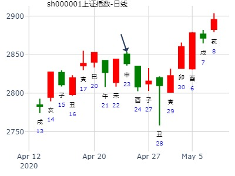
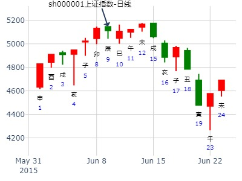
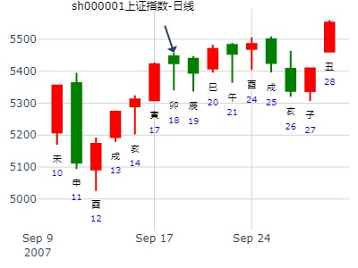
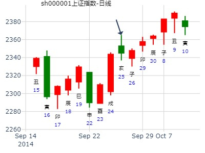
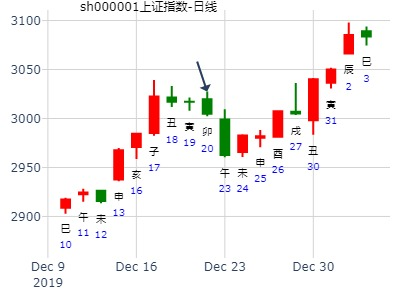
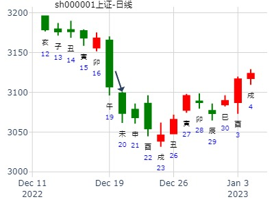

占事：000725未来半年走势？招财公主钱币卦
起卦时间：2015年1月26日10时37分 (手工指定)
干支：甲午年 丁丑月 壬寅日 乙巳时 （日空：辰巳）
坎宫：泽火革 兑宫：泽山咸
六神 伏神 本 卦 变 卦
白虎? ?官鬼丁未土?▅▅ ▅▅? ? ?官鬼丁未土?▅▅ ▅▅?应
腾蛇? ?父母丁酉金?▅▅▅▅▅? ? ?父母丁酉金?▅▅▅▅▅?
勾陈? ?兄弟丁亥水?▅▅▅▅▅?世? ?兄弟丁亥水?▅▅▅▅▅?
朱雀?妻财戊午火?兄弟己亥水?▅▅▅▅▅? ? ?父母丙申金?▅▅▅▅▅?世
青龙? ?官鬼己丑土?▅▅ ▅▅? ? ?妻财丙午火?▅▅ ▅▅?
玄武? ?子孙己卯木?▅▅▅▅▅?应?○→?官鬼丙辰土?▅▅ ▅▅?
初九：巩用黄牛之革。象曰：巩用黄牛，不可以有为也。
卯月大涨。
马后炮：
1. 丑月大跌。官鬼得助。
招财公主测000725未来半年走势
第1,3花
第2,2花
第3,1花
第4,1花
第5,1花
第6,2花

占事: 2012.02.1 上证大盘走势
起卦方式：手动摇卦
公历时间：2012年2月1日9时14分
干支：辛卯年 辛丑月 壬辰日 乙巳时
旬空：午未 辰巳 午未 寅卯
坎宫：泽火革 兑宫：泽山咸
六神 伏 神 【本 卦】 【变 卦】
白虎 ▄▄ ▄▄ 官鬼丁未土 ▄▄ ▄▄ 官鬼丁未土 应
螣蛇 ▄▄▄▄▄ 父母丁酉金 ▄▄▄▄▄ 父母丁酉金
勾陈 ▄▄▄▄▄ 兄弟丁亥水 世 ▄▄▄▄▄ 兄弟丁亥水
朱雀 妻财戊午火 ▄▄▄▄▄ 兄弟己亥水 ▄▄▄▄▄ 父母丙申金 世
青龙 ▄▄ ▄▄ 官鬼己丑土 ▄▄ ▄▄ 妻财丙午火
玄武 ▄▄▄▄▄ 子孙己卯木 应O-> ▄▄ ▄▄ 官鬼丙辰土
占事: 上证指数 下周
公历时间：2015年2月7日10时5分
干支：乙未年 戊寅月 甲寅日 己巳时
旬空：辰巳 申酉 子丑 戌亥
坎宫：泽火革 兑宫：泽山咸
六神 伏 神 【本 卦】 【变 卦】
玄武 ▄▄ ▄▄ 官鬼丁未土 ▄▄ ▄▄ 官鬼丁未土 应
白虎 ▄▄▄▄▄ 父母丁酉金 ▄▄▄▄▄ 父母丁酉金
螣蛇 ▄▄▄▄▄ 兄弟丁亥水 世 ▄▄▄▄▄ 兄弟丁亥水
勾陈 妻财戊午火 ▄▄▄▄▄ 兄弟己亥水 ▄▄▄▄▄ 父母丙申金 世
朱雀 ▄▄ ▄▄ 官鬼己丑土 ▄▄ ▄▄ 妻财丙午火
青龙 ▄▄▄▄▄ 子孙己卯木 应O-> ▄▄ ▄▄ 官鬼丙辰土
初九：巩用黄牛之革。象曰：巩用黄牛，不可以有为也
福晶科技未来6个月
时间: 2017-02-22 （08：56）
干支: 丁酉年壬寅月庚辰日庚辰时 (旬空: 申酉 )
泽火革 泽山咸
六神 伏神 本 卦 变 卦
腾蛇 ▅▅ ▅▅ 官鬼未土 ▅▅ ▅▅ 官鬼未土 应
勾陈 ▅▅▅▅▅ 父母酉金 ▅▅▅▅▅ 父母酉金
朱雀 ▅▅▅▅▅ 兄弟亥水 世 ▅▅▅▅▅ 兄弟亥水
青龙 妻财午火▅▅▅▅▅ 兄弟亥水 ▅▅▅▅▅ 父母申金 世
玄武 ▅▅ ▅▅ 官鬼丑土 ▅▅ ▅▅ 妻财午火
白虎 ▅▅▅▅▅ 子孙卯木 应Ｏ→ ▅▅ ▅▅ 官鬼辰土
问002224三力士到3月底。招财进宝。
时间: 2017-02-23 （07：13）
干支: 丁酉年壬寅月辛巳日壬辰时 (旬空: 申酉 )
泽火革 泽山咸
六神 伏神 本 卦 变 卦
腾蛇 ▅▅ ▅▅ 官鬼未土 ▅▅ ▅▅ 官鬼未土 应
勾陈 ▅▅▅▅▅ 父母酉金 ▅▅▅▅▅ 父母酉金
朱雀 ▅▅▅▅▅ 兄弟亥水 世 ▅▅▅▅▅ 兄弟亥水
青龙 妻财午火▅▅▅▅▅ 兄弟亥水 ▅▅▅▅▅ 父母申金 世
玄武 ▅▅ ▅▅ 官鬼丑土 ▅▅ ▅▅ 妻财午火
白虎 ▅▅▅▅▅ 子孙卯木 应Ｏ→ ▅▅ ▅▅ 官鬼辰土

预测下周一大盘走势方向
时间: 2007-03-09 （15时5分）
干支: 丁亥年癸卯月壬寅日戊申时 (旬空: 辰巳 )
泽火革 泽山咸
六神 伏神 本 卦 变 卦
白虎 ▅▅ ▅▅ 官鬼未土 ▅▅ ▅▅ 官鬼未土 应
腾蛇 ▅▅▅▅▅ 父母酉金 ▅▅▅▅▅ 父母酉金
勾陈 ▅▅▅▅▅ 兄弟亥水 世 ▅▅▅▅▅ 兄弟亥水
朱雀 妻财午火▅▅▅▅▅ 兄弟亥水 ▅▅▅▅▅ 父母申金 世
青龙 ▅▅ ▅▅ 官鬼丑土 ▅▅ ▅▅ 妻财午火
玄武 ▅▅▅▅▅ 子孙卯木 应Ｏ→ ▅▅ ▅▅ 官鬼辰土
革之咸_sz159887_银行ETF_2015-04-15
子化鬼，鬼爻值月，涨不动了。
秋水问银行板块今天到4月底走势
时间: 2015-04-15
干支: 乙未年庚辰月辛酉日癸巳时 (旬空: 子丑 )
泽火革 泽山咸
六神 伏神 本 卦 变 卦
腾蛇 ▅▅ ▅▅ 官鬼未土 ▅▅ ▅▅ 官鬼未土 应
勾陈 ▅▅▅▅▅ 父母酉金 ▅▅▅▅▅ 父母酉金
朱雀 ▅▅▅▅▅ 兄弟亥水 世 ▅▅▅▅▅ 兄弟亥水
青龙 妻财午火▅▅▅▅▅ 兄弟亥水 ▅▅▅▅▅ 父母申金 世
玄武 ▅▅ ▅▅ 官鬼丑土 ▅▅ ▅▅ 妻财午火
白虎 ▅▅▅▅▅ 子孙卯木 应Ｏ→ ▅▅ ▅▅ 官鬼辰土
2020.04.24日上证指数擂台赛第十五场第5局 T方（日测参赛贴)
起卦公历：2020年4月23日15时3分(北京时间)
干支： 庚子年 庚辰月 丙申日 丙申时 (卦身：子)酉
主变卦 泽火革(坎宫) 之 泽山咸(兑宫) [空亡:辰、巳]
青龙 ━ ━ 官鬼未土 ━ ━ 官鬼未土 应
玄武 ━━━ 父母酉金 ━━━ 父母酉金
白虎 ━━━ 兄弟亥水 世 ━━━ 兄弟亥水
螣蛇 财 火 ━━━ 兄弟亥水 ━━━ 父母申金 世
勾陈 ━ ━ 官鬼丑土 ━ ━ 妻财午火
朱雀 ━━━○ 子孙卯木 应 ━ ━ 官鬼辰土

5.17 大盘？
2022年5月17日4时44分
干支：壬寅年 乙巳月 庚午日 戊寅时 （日空：戌亥）
神煞：驿马－申 桃花－卯 日禄－申 贵人－丑，未
坎宫：泽火革 兑宫：泽山咸
六神 伏神 本 卦 变 卦
螣蛇 官鬼未土 ▅▅ ▅▅ 官鬼未土 ▅▅ ▅▅ 应
勾陈 父母酉金 ▅▅▅▅▅ 父母酉金 ▅▅▅▅▅
朱雀 兄弟亥水 ▅▅▅▅▅ 世 兄弟亥水 ▅▅▅▅▅
青龙 妻财午火 兄弟亥水 ▅▅▅▅▅ 父母申金 ▅▅▅▅▅ 世
玄武 官鬼丑土 ▅▅ ▅▅ 妻财午火 ▅▅ ▅▅
白虎 子孙卯木 ▅▅▅▅▅ 应 ○→ 官鬼辰土 ▅▅ ▅▅
上证指数6月1日—6月30日奇门预测探讨
以下是引用UC在2009-5-26 15:14:00的发言：
公历时间：2009年5月26日15时19分
干支：己丑年 己巳月 辛未日 丙申时
旬空：午未 戌亥 戌亥 辰巳
神煞：驿马─巳 桃花─子 日禄─酉 贵人─寅，午
坎宫：泽火革 兑宫：泽山咸
六神 伏 神 【本 卦】 【变 卦】
螣蛇 ▄▄ ▄▄ 官鬼丁未土 ▄▄ ▄▄ 官鬼丁未土 应
勾陈 ▄▄▄▄▄ 父母丁酉金 ▄▄▄▄▄ 父母丁酉金
朱雀 ▄▄▄▄▄ 兄弟丁亥水 世 ▄▄▄▄▄ 兄弟丁亥水
青龙 妻财戊午火 ▄▄▄▄▄ 兄弟己亥水 ▄▄▄▄▄ 父母丙申金 世
玄武 ▄▄ ▄▄ 官鬼己丑土 ▄▄ ▄▄ 妻财丙午火
白虎 ▄▄▄▄▄ 子孙己卯木 应O-> ▄▄ ▄▄ 官鬼丙辰土
空下伏神，易于引拔
兄弟月破
问明日大盘
2015年6月9日21时25分 ?易述人生
农历时间：乙未年 四月 二十三日 亥时
干 支：乙未年 壬午月 丙辰日 旬空：(子丑)
坎宫：泽火革 兑宫：泽山咸?
六神? 伏 神?【本 卦】 【变 卦】
青龙 ▄▄??▄▄ 官鬼丁未土 ▄▄??▄▄ 官鬼丁未土 应
玄武 ▄▄▄▄▄ 父母丁酉金 ▄▄▄▄▄ 父母丁酉金
白虎 ▄▄▄▄▄ 兄弟丁亥水 世 ▄▄▄▄▄ 兄弟丁亥水
螣蛇 妻财戊午火 ▄▄▄▄▄ 兄弟己亥水 ▄▄▄▄▄ 父母丙申金 世
勾陈 ▄▄??▄▄ 官鬼己丑土 ▄▄??▄▄ 妻财丙午火
朱雀 ▄▄▄▄▄ 子孙己卯木 应O-> ▄▄??▄▄ 官鬼丙辰土

试测6.15星期三上证收盘个位数 是几？ 马生南阳
公历起卦时间：2022年6月13日17时38分 (电脑自动)
干支：壬寅年 丙午月 丁酉日 己酉时 （日空：辰巳）
神煞：驿马－亥 桃花－午 日禄－午 贵人－酉，亥
坎宫：泽火革 兑宫：泽山咸
六神 伏神 本 卦 变 卦
青龙 官鬼丁未土 ▅▅ ▅▅ 官鬼丁未土 ▅▅ ▅▅ 应
玄武 父母丁酉金 ▅▅▅▅▅ 父母丁酉金 ▅▅▅▅▅
白虎 兄弟丁亥水 ▅▅▅▅▅ 世 兄弟丁亥水 ▅▅▅▅▅
螣蛇 妻财戊午火 兄弟己亥水 ▅▅▅▅▅ 父母丙申金 ▅▅▅▅▅ 世
勾陈 官鬼己丑土 ▅▅ ▅▅ 妻财丙午火 ▅▅ ▅▅
朱雀 子孙己卯木 ▅▅▅▅▅ 应 ○→ 官鬼丙辰土 ▅▅ ▅▅
下周趋势 6.29-7.3行情预测
占问事宜：大盘明天趋势
公历：2015年6月29日16时55分，星期一。
神煞：驿马-寅 桃花-酉 干禄-巳 贵人-亥、酉
干支：乙未年 壬午月 丙子日 丙申时 [空亡:申、酉]
主变卦 泽火革(坎宫) 之 泽山咸(兑宫)
青龙 ▅▅ ▅▅ 官鬼丁未土 ▅▅ ▅▅ 官鬼丁未土 应
玄武 ▅▅▅▅▅ 父母丁酉金 ▅▅▅▅▅ 父母丁酉金
白虎 ▅▅▅▅▅ 兄弟丁亥水 世 ▅▅▅▅▅ 兄弟丁亥水
螣蛇 妻财戊午火 ▅▅▅▅▅ 兄弟己亥水 ▅▅▅▅▅ 父母丙申金 世
勾陈 ▅▅ ▅▅ 官鬼己丑土 ▅▅ ▅▅ 妻财丙午火
朱雀 ▅▅▅▅▅○子孙己卯木 应 ▅▅ ▅▅ 官鬼丙辰土
7月1-5日上海大盘升跌
癸巳 戊午丁卯 丁未 (日空:戌亥 时空:寅卯 ) (2013/06/3014:01:47)
主泽火革 变泽山咸
青龙 官鬼未土∥ 官鬼未土 ∥ 应
玄武 父母酉金／ 父母酉金 ／
白虎 兄弟亥水／ 世 兄弟亥水 ／
妻财午火：腾蛇 兄弟亥水／ 父母申金 ／ 世
勾陈 官鬼丑土∥ 妻财午火 ∥
朱雀 子孙卯木○ 应 官鬼辰土 ∥
创业板走势
求测内容：7.1创业板指数399006走势
起卦方式：手工指定
公历：2022年07月01日02时45分
四柱：壬寅年 丙午月 乙卯日 丁丑时 (日空：子丑)
卦名：坎宫4世卦：泽火革 之 兑宫3世卦：泽山咸
玄武 ▅ ▅ 官鬼丁未土 ▅ ▅ 官鬼丁未土 应
白虎 ▅▅▅ 父母丁酉金 ▅▅▅ 父母丁酉金
螣蛇 ▅▅▅ 兄弟丁亥水 世 ▅▅▅ 兄弟丁亥水
勾陈 妻财戊午火 ▅▅▅ 兄弟己亥水 ▅▅▅ 父母丙申金 世
朱雀 ▅ ▅ 官鬼己丑土 ▅ ▅ 妻财丙午火
青龙 ▅▅▅ 子孙己卯木 应○→ ▅ ▅ 官鬼丙辰土
革：己日乃孚，元亨利贞，悔亡。
初九：巩用黄牛之革。
大盘明日（17号）涨跌情况
干支：丁亥年 丁未月 辛亥日 乙未时
旬空：午未 寅卯 寅卯 辰巳
神煞：驿马─巳 桃花─子 日禄─酉 贵人─寅，午
坎宫：泽火革 兑宫：泽山咸
六神 伏 神 【本 卦】 【变 卦】
螣蛇 ▄▄ ▄▄ 官鬼丁未土 ▄▄ ▄▄ 官鬼丁未土 应
勾陈 ▄▄▄▄▄ 父母丁酉金 ▄▄▄▄▄ 父母丁酉金
朱雀 ▄▄▄▄▄ 兄弟丁亥水 世 ▄▄▄▄▄ 兄弟丁亥水
青龙 妻财戊午火 ▄▄▄▄▄ 兄弟己亥水 ▄▄▄▄▄ 父母丙申金 世
玄武 ▄▄ ▄▄ 官鬼己丑土 ▄▄ ▄▄ 妻财丙午火
白虎 ▄▄▄▄▄ 子孙己卯木 应O-> ▄▄ ▄▄ 官鬼丙辰土
求测人：某人，女，辛亥(1971年)，电脑摇卦(起卦方式)
占问事宜：19日大盘
公历：2015年8月18日10时6分，星期二。
干支：乙未年 甲申月 丙寅日 癸巳时 (卦身：酉)
主变卦 泽火革(坎宫) 之 泽山咸(兑宫) [空亡:戌、亥]
青龙 ▅▅ ▅▅ 官鬼丁未土 ▅▅ ▅▅ 官鬼丁未土 应
玄武 ▅▅▅▅▅ 父母丁酉金 ▅▅▅▅▅ 父母丁酉金
白虎 ▅▅▅▅▅ 兄弟丁亥水 世 ▅▅▅▅▅ 兄弟丁亥水
螣蛇 妻财戊午火 ▅▅▅▅▅ 兄弟己亥水 ▅▅▅▅▅ 父母丙申金 世
勾陈 ▅▅ ▅▅ 官鬼己丑土 ▅▅ ▅▅ 妻财丙午火
朱雀 ▅▅▅▅▅○子孙己卯木 应 ▅▅ ▅▅ 官鬼丙辰土
反馈：低开高走，大涨
8月29日至9月2日大盘预测
公历时间：2022年8月26日17时46分
干 支：壬寅年 戊申月 辛亥日 丁酉时
旬 空：辰巳 寅卯 寅卯 辰巳
神 煞：驿马─巳 桃花─子 日禄─酉 贵人─寅，午
坎宫：泽火革 兑宫：泽山咸
六神 伏 神 【本 卦】 【变 卦】
螣蛇 ▄▄ ▄▄ 官鬼丁未土 ▄▄ ▄▄ 官鬼丁未土 应
勾陈 ▄▄▄▄▄ 父母丁酉金 ▄▄▄▄▄ 父母丁酉金
朱雀 ▄▄▄▄▄ 兄弟丁亥水 世 ▄▄▄▄▄ 兄弟丁亥水
青龙 妻财戊午火 ▄▄▄▄▄ 兄弟己亥水 ▄▄▄▄▄ 父母丙申金 世
玄武 ▄▄ ▄▄ 官鬼己丑土 ▄▄ ▄▄ 妻财丙午火
白虎 ▄▄▄▄▄ 子孙己卯木 应○ ▄▄ ▄▄ 官鬼丙辰土
占事：002024苏宁云商下周涨跌
公历起卦时间：2014年9月12日16时49分
干支：甲午年 癸酉月 丙戌日 丙申时 （日空：午未）
神煞：驿马－申 桃花－卯 日禄－巳 贵人－酉，亥
坎宫：泽火革 兑宫：泽山咸
六神 伏神 本 卦 变 卦
青龙 官鬼丁未土 ▅▅ ▅▅ 官鬼丁未土 ▅▅ ▅▅ 应
玄武 父母丁酉金 ▅▅▅▅▅ 父母丁酉金 ▅▅▅▅▅
白虎 兄弟丁亥水 ▅▅▅▅▅ 世 兄弟丁亥水 ▅▅▅▅▅
腾蛇 妻财戊午火 兄弟己亥水 ▅▅▅▅▅ 父母丙申金 ▅▅▅▅▅ 世
勾陈 官鬼己丑土 ▅▅ ▅▅ 妻财丙午火 ▅▅ ▅▅
朱雀 子孙己卯木 ▅▅▅▅▅ 应 ○→ 官鬼丙辰土 ▅▅ ▅▅
个股射覆...一日一只大家共同交流
天心值符 发表于 2016-9-17 15:50
青龙管业-----星期一走势
公历：2016年9月17日15时50分，星期六。
干支：丙申年 丁酉月 壬寅日 戊申时 (卦身：酉)
主变卦 泽火革(坎宫) 之 泽山咸(兑宫) [空亡:辰、巳]
白虎 ▅▅ ▅▅ 官鬼丁未土 ▅▅ ▅▅ 官鬼丁未土 应
螣蛇 ▅▅▅▅▅ 父母丁酉金 ▅▅▅▅▅ 父母丁酉金
勾陈 ▅▅▅▅▅ 兄弟丁亥水 世 ▅▅▅▅▅ 兄弟丁亥水
朱雀 妻财戊午火 ▅▅▅▅▅ 兄弟己亥水 ▅▅▅▅▅ 父母丙申金 世
青龙 ▅▅ ▅▅ 官鬼己丑土 ▅▅ ▅▅ 妻财丙午火
玄武 ▅▅▅▅▅○子孙己卯木 应 ▅▅ ▅▅ 官鬼丙辰土
[原创]每日预测深沪两市大盘指数
起卦方式：手工指定
公历时间：2007年9月18日9时30分 星期二
干支：丁亥年 己酉月 乙卯日 辛巳时 (旬空：子丑)
神煞：驿马—巳 桃花—子 日禄—卯 贵人—子，申
坎宫：泽火革 兑宫：泽山咸
六神 伏 神 【本 卦】 【变 卦】
玄武 ▅▅ ▅▅ 官鬼丁未土 ▅▅ ▅▅ 官鬼丁未土 应
白虎 ▅▅▅▅▅ 父母丁酉金 ▅▅▅▅▅ 父母丁酉金
螣蛇 ▅▅▅▅▅ 兄弟丁亥水 世 ▅▅▅▅▅ 兄弟丁亥水
勾陈 妻财戊午火 ▅▅▅▅▅ 兄弟己亥水 ▅▅▅▅▅ 父母丙申金 世
朱雀 ▅▅ ▅▅ 官鬼己丑土 ▅▅ ▅▅ 妻财丙午火
青龙 ▅▅▅▅▅ 子孙己卯木 应○→ ▅▅ ▅▅ 官鬼丙辰土
断:深圳大盘,收阳为主

作者: kkqq8866
标题: — 2014年9月25日周四走势
公历起卦时间：2014年9月24日19时31分
干支：甲午年 癸酉月 戊戌日 壬戌时 （日空：辰巳）
坎宫：泽火革 兑宫：泽山咸
六神 伏神 本 卦 变 卦
朱雀 官鬼丁未土 ▅▅ ▅▅ 官鬼丁未土 ▅▅ ▅▅ 应
青龙 父母丁酉金 ▅▅▅▅▅ 父母丁酉金 ▅▅▅▅▅
玄武 兄弟丁亥水 ▅▅▅▅▅ 世 兄弟丁亥水 ▅▅▅▅▅
白虎 妻财戊午火 兄弟己亥水 ▅▅▅▅▅ 父母丙申金 ▅▅▅▅▅ 世
腾蛇 官鬼己丑土 ▅▅ ▅▅ 妻财丙午火 ▅▅ ▅▅
勾陈 子孙己卯木 ▅▅▅▅▅ 应 ○→ 官鬼丙辰土 ▅▅ ▅▅
初九：巩用黄牛之革。象曰：巩用黄牛，不可以有为也
试断：下超低开稍下，震荡稍上，回落，收阴！（盘下之势）
马后炮：
1.黄牛之革，横住。
2.子化鬼，先论发动，后论化鬼。

603843正平股份下午跟明天涨跌
占问事宜：603843正平股份明天涨跌
公历：2016年9月28日17时36分，星期三。
神煞：驿马-亥 桃花-午 干禄-子 贵人-卯、巳
干支：丙申年 丁酉月 癸丑日 辛酉时 (卦身：酉)
主变卦 泽火革(坎宫) 之 泽山咸(兑宫) [空亡:寅、卯]
白虎 ▅▅ ▅▅ 官鬼丁未土 ▅▅ ▅▅ 官鬼丁未土 应
螣蛇 ▅▅▅▅▅ 父母丁酉金 ▅▅▅▅▅ 父母丁酉金
勾陈 ▅▅▅▅▅ 兄弟丁亥水 世 ▅▅▅▅▅ 兄弟丁亥水
朱雀 妻财戊午火 ▅▅▅▅▅ 兄弟己亥水 ▅▅▅▅▅ 父母丙申金 世
青龙 ▅▅ ▅▅ 官鬼己丑土 ▅▅ ▅▅ 妻财丙午火
玄武 ▅▅▅▅▅○子孙己卯木 应 ▅▅ ▅▅ 官鬼丙辰土

2020.11.16--20 SZZS !!
公历时间：2020年11月14日20时12分
干 支：庚子年 丁亥月 辛酉日 戊戌时
旬 空：辰巳 午未 子丑 辰巳
神 煞：驿马─亥 桃花─午 日禄─酉 贵人─寅，午
坎宫：泽火革 兑宫：泽山咸
六神 伏 神 【本 卦】 【变 卦】
螣蛇 ▄▄ ▄▄ 官鬼丁未土 ▄▄ ▄▄ 官鬼丁未土 应
勾陈 ▄▄▄▄▄ 父母丁酉金 ▄▄▄▄▄ 父母丁酉金
朱雀 ▄▄▄▄▄ 兄弟丁亥水 世 ▄▄▄▄▄ 兄弟丁亥水
青龙 妻财戊午火 ▄▄▄▄▄ 兄弟己亥水 ▄▄▄▄▄ 父母丙申金 世
玄武 ▄▄ ▄▄ 官鬼己丑土 ▄▄ ▄▄ 妻财丙午火
白虎 ▄▄▄▄▄ 子孙己卯木 应○ ▄▄ ▄▄ 官鬼丙辰土
16日预测，2020.11.14得革之咸，判断收阴
占问事宜：测今天2016.11.17中国银行何时间段是顶？
公历：2016年11月17日10时25分，星期四。
干支：丙申年 己亥月 癸卯日 丁巳时 (卦身：酉)
主变卦 泽火革(坎宫) 之 泽山咸(兑宫) [空亡:辰、巳]
白虎 ▅▅ ▅▅ 官鬼丁未土 ▅▅ ▅▅ 官鬼丁未土 应
螣蛇 ▅▅▅▅▅ 父母丁酉金 ▅▅▅▅▅ 父母丁酉金
勾陈 ▅▅▅▅▅ 兄弟丁亥水 世 ▅▅▅▅▅ 兄弟丁亥水
朱雀 妻财戊午火 ▅▅▅▅▅ 兄弟己亥水 ▅▅▅▅▅ 父母丙申金 世
青龙 ▅▅ ▅▅ 官鬼己丑土 ▅▅ ▅▅ 妻财丙午火
玄武 ▅▅▅▅▅○子孙己卯木 应 ▅▅ ▅▅ 官鬼丙辰土
占事：601388怡球资源明天涨跌
公历起卦时间：2014年12月1日17时5分 (电脑自动)
干支：甲午年 乙亥月 丙午日 丁酉时 （日空：寅卯）
神煞：驿马－申 桃花－卯 日禄－巳 贵人－酉，亥
坎宫：泽火革 兑宫：泽山咸
六神 伏神 本 卦 变 卦
青龙 官鬼丁未土 ▅▅ ▅▅ 官鬼丁未土 ▅▅ ▅▅ 应
玄武 父母丁酉金 ▅▅▅▅▅ 父母丁酉金 ▅▅▅▅▅
白虎 兄弟丁亥水 ▅▅▅▅▅ 世 兄弟丁亥水 ▅▅▅▅▅
腾蛇 妻财戊午火 兄弟己亥水 ▅▅▅▅▅ 父母丙申金 ▅▅▅▅▅ 世
勾陈 官鬼己丑土 ▅▅ ▅▅ 妻财丙午火 ▅▅ ▅▅
朱雀 子孙己卯木 ▅▅▅▅▅ 应 ○→ 官鬼丙辰土 ▅▅ ▅▅
子月看好大盘、看好五粮液！
测五粮液股价今年能升至22.00元/股吗？
公历时间：2014年12月3日4时51分
干支：甲午年 乙亥月 戊申日 甲寅时
旬空：辰巳 申酉 寅卯 子丑
坎宫：泽火革 兑宫：泽山咸
六神 伏 神 【本 卦】 【变 卦】
朱雀 ▄▄ ▄▄ 官鬼丁未土 ▄▄ ▄▄ 官鬼丁未土 应
青龙 ▄▄▄▄▄ 父母丁酉金 ▄▄▄▄▄ 父母丁酉金
玄武 ▄▄▄▄▄ 兄弟丁亥水 世 ▄▄▄▄▄ 兄弟丁亥水
白虎 妻财戊午火 ▄▄▄▄▄ 兄弟己亥水 ▄▄▄▄▄ 父母丙申金 世
螣蛇 ▄▄ ▄▄ 官鬼己丑土 ▄▄ ▄▄ 妻财丙午火
勾陈 ▄▄▄▄▄ 子孙己卯木 应O-> ▄▄ ▄▄ 官鬼丙辰土
T-Z上证指数擂台赛第二场第5局（2019年12月20日）应战方
Z 应战方
占问事宜：2019年12月20日 周五 上证指数涨跌
公历：2019年12月20日9时20分，星期五。
干支：己亥年 丙子月 辛卯日 癸巳时 (卦身：酉)
主变卦 泽火革(坎宫) 之 泽山咸(兑宫) [空亡:午、未]
螣蛇 ▅▅ ▅▅ 官鬼丁未土 ▅▅ ▅▅ 官鬼丁未土 应
勾陈 ▅▅▅▅▅ 父母丁酉金 ▅▅▅▅▅ 父母丁酉金
朱雀 ▅▅▅▅▅ 兄弟丁亥水 世 ▅▅▅▅▅ 兄弟丁亥水
青龙 妻财戊午火 ▅▅▅▅▅ 兄弟己亥水 ▅▅▅▅▅ 父母丙申金 世
玄武 ▅▅ ▅▅ 官鬼己丑土 ▅▅ ▅▅ 妻财丙午火
白虎 ▅▅▅▅▅○子孙己卯木 应 ▅▅ ▅▅ 官鬼丙辰土

测申日大盘
公历起卦时间：2022年12月20日15时45分 (手工指定)
干支：壬寅年 壬子月 丁未日 戊申时 （日空：寅卯）
坎宫：泽火革 兑宫：泽山咸
六神 伏神 本 卦 变 卦
青龙 官鬼丁未土 ▅▅ ▅▅ 官鬼丁未土 ▅▅ ▅▅ 应
玄武 父母丁酉金 ▅▅▅▅▅ 父母丁酉金 ▅▅▅▅▅
白虎 兄弟丁亥水 ▅▅▅▅▅ 世 兄弟丁亥水 ▅▅▅▅▅
螣蛇 妻财戊午火 兄弟己亥水 ▅▅▅▅▅ 父母丙申金 ▅▅▅▅▅ 世
勾陈 官鬼己丑土 ▅▅ ▅▅ 妻财丙午火 ▅▅ ▅▅
朱雀 子孙己卯木 ▅▅▅▅▅ 应 ○→ 官鬼丙辰土 ▅▅ ▅▅
午未日跌。
子孙动，但化官鬼。子孙空，明天还是不太理想。后天子孙冲空，涨。
上证指数3068.41-5.36 -0.17%

华工科技12月28--31日走势——乾隆币卦
华工科技12月28-31日 <br>
公历时间：2015年12月25日14时57分
干 支：乙未年 戊子月 乙亥日 癸未时
旬 空：辰巳 午未 (申酉) 申酉
坎宫：泽火革 兑宫：泽山咸
六神 伏 神 【本 卦】 【变 卦】
玄武 ▄▄ ▄▄ 官鬼丁未土 ▄▄ ▄▄ 官鬼丁未土 应
白虎 ▄▄▄▄▄ 父母丁酉金 ▄▄▄▄▄ 父母丁酉金
螣蛇 ▄▄▄▄▄ 兄弟丁亥水 世 ▄▄▄▄▄ 兄弟丁亥水
勾陈 妻财戊午火 ▄▄▄▄▄ 兄弟己亥水 ▄▄▄▄▄ 父母丙申金 世
朱雀 ▄▄ ▄▄ 官鬼己丑土 ▄▄ ▄▄ 妻财丙午火
青龙 ▄▄▄▄▄ 子孙己卯木 应O ▄▄ ▄▄ 官鬼丙辰土 |
酉日子孙逢冲，大跌。大盘跌停（熔断）
恭试测2020年12月31日上证指数值收盘千位数+2yn？
公历起卦时间：2020年2月16日16时46分 (电脑自动)
干支：庚子年 戊寅月 己丑日 壬申时 （日空：午未）
神煞：驿马－亥 桃花－午 日禄－午 贵人－子，申
坎宫：泽火革 兑宫：泽山咸
六神 伏神 本 卦 变 卦
勾陈 官鬼丁未土 ▅▅ ▅▅ 官鬼丁未土 ▅▅ ▅▅ 应
朱雀 父母丁酉金 ▅▅▅▅▅ 父母丁酉金 ▅▅▅▅▅
青龙 兄弟丁亥水 ▅▅▅▅▅ 世 兄弟丁亥水 ▅▅▅▅▅
玄武 妻财戊午火 兄弟己亥水 ▅▅▅▅▅ 父母丙申金 ▅▅▅▅▅ 世
白虎 官鬼己丑土 ▅▅ ▅▅ 妻财丙午火 ▅▅ ▅▅
螣蛇 子孙己卯木 ▅▅▅▅▅ 应 ○→ 官鬼丙辰土 ▅▅ ▅▅